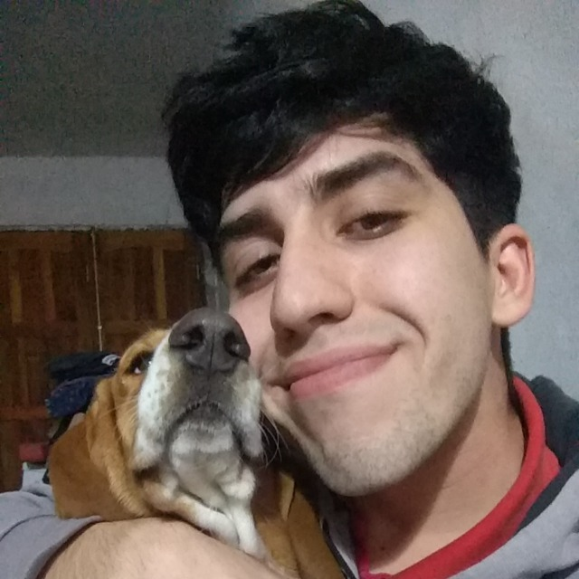
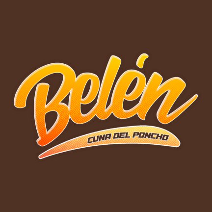
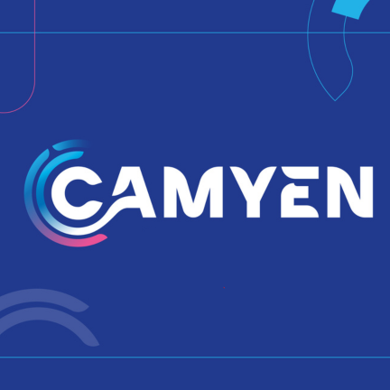
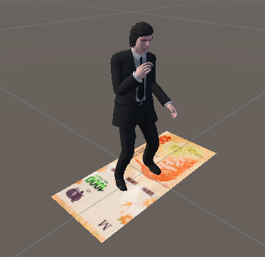
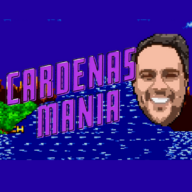
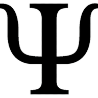
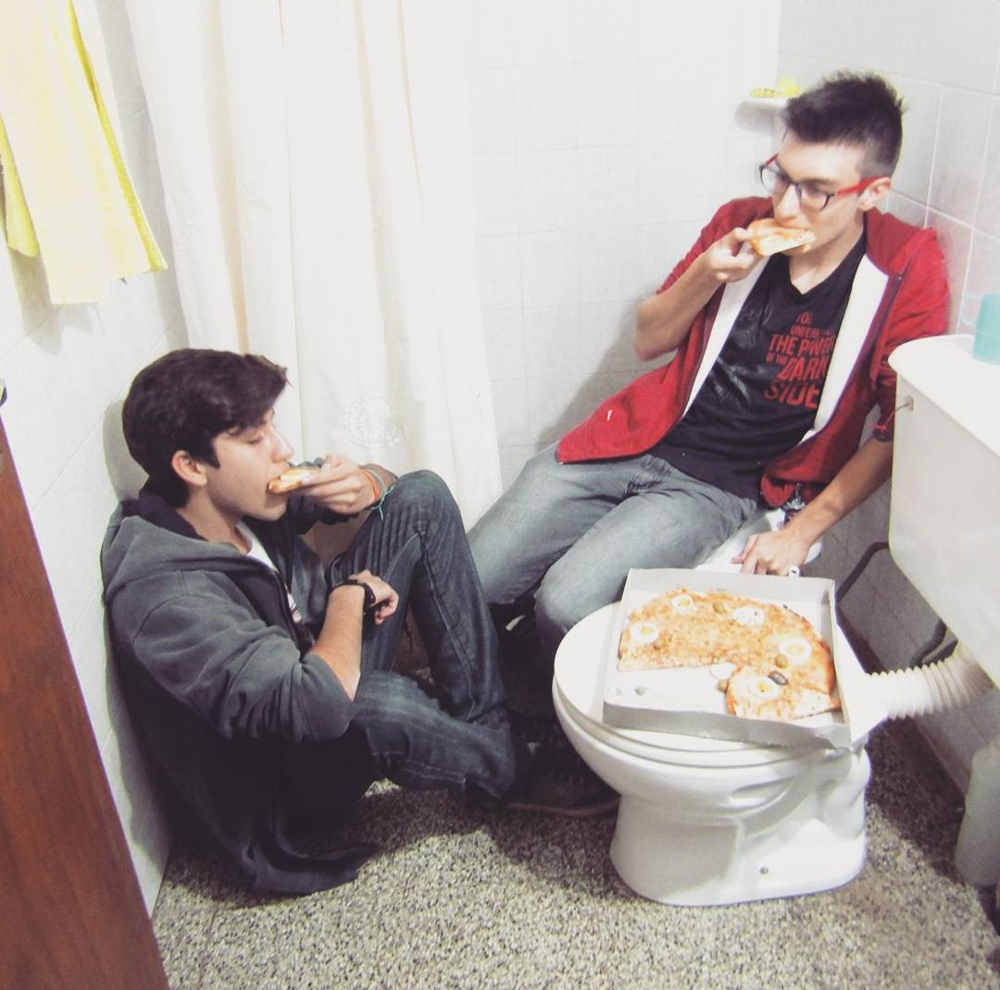

UN SIMPÁTICO DEV

Durante años porté diferentes versiones de Android para distintos teléfonos utilizando el código fuente original del dispositivo.
Mis posts en XDASupraKiosk es un navegador cerrado para mostrar contenido exclusivo del cliente. Diseñado para funcionar en tótems interactivos.
ImágenesSupraControl es una App secundaria o complemento de SupraKiosk, su función es controlar el contenido que se muestra en SupraKiosk.
ImágenesAIMA es un Chat Bot conectado con la API de OpenAI, diseñada y entrenada para ser una experta en Marketing Digital.
ImágenesTVBar fue creada para innovar la cartelería digital, muestra canales de televisión por Internet y también muestra contenido del cliente.
ImágenesCatamarca 360° es una WebApp que muestra panoramas 360° de la provincia de Catamarca separada por regiones.
Probar AppPucara 360° es una WebApp similar a Catamarca 360° pero con temática del Pucara de Aconquija, Catamarca.
Probar App
Belen 360° es una App creada para los Oculus Quest 2. Muestra videos en 360° con la funcionalidad de Kiosco, ideal para eventos.
Ver video
Camyen 360° es un mini-juego creado para los Oculus Quest 2. El entorno está creado con fotogrametría.
Ver video
Billetes Argentinos es una App de Realidad Aumentada, enfocando la cámara en un billete de 1000 pesos, saldrá Milei bailando, es una pequeña demo.
Ver video
Cardenasmania es un juego de plataforma hecho en Construct 3. Básicamente es un Sonic creado de cero en donde el villano es mi ex jefe Sebastián Cárdenas.
Probar Juego
Una Progressive Web App, la App consiste en un listado con todos los psicólogos de Catamarca. Todavía se encuentra en etapa temprana de desarrollo.
¡Próximamente!Un simpático programador ubicado en San Fernando del Valle de Catamarca, Argentina
Me llamo Esteban Guzzo, tengo 25 años y desde chico siempre fui un aficionado por la tecnología en general. Mis primeros pasos en el mundo de la programación fueron gracias a Android. Actualmente, me encuentro trabajando en una empresa de software (Supranet.ar) de manera presencial en la provincia de Catamarca.
Manejo muchísimas tecnologías y lenguajes de programación, pero principalmente me destaco en el lenguaje de Kotlin y el uso de Android Studio, Unity para crear apps de realidad virtual (Oculus Quest 2) y WordPress para la creación de páginas web.
Me adapto con facilidad a los entornos de trabajo y cuento con medio de transporte propio, dispongo de disponibilidad horaria completa y siempre cumplo con las metas que se propongan. Ah, también soy buen compañero de oficina, bastante simpático.
